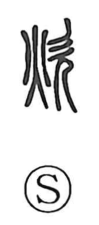

炊

Uncategorized
Kun: taku, kashigu | On: sui
to cook ・ to cook rice ・ to simmer ・ to fan a fire
Explanation
This character combines the fire element with 欠, the figure of a standing person shown in profile with the mouth open. It depicts someone blowing breath onto a flame—sending air to revive and strengthen the fire—and by extension came to mean cooking: cooking rice, cooking in general, and simmering. The term also carries ritual resonance: in the Fengshan chapter of the Shiji, among the deities served by shamans appears a “First Cook” (Xian Chui, J. Sen Sui) of Jin, likely an early form of the later stove deity, underscoring the sacred role of tending the hearth.